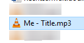

Finished Projects
Work in Progress
Faces of Internet
Interactive travel through evolution of webpages.From the very beginning to present state.
Gamedev challenge
A dream from childhood becomes reality.
Future Plans

Becoming amateur music artist
Making electronic music in my taste.After learning how to master patterns.